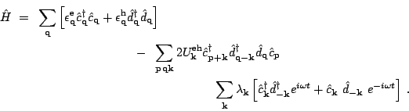
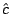
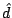
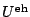
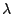
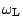
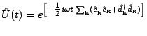

While at Rutgers, I did some numerical calculations on a steady state situation, in which a steady population of electron-hole gas is maintained by a laser:


,
are electron and hole operators,
is electron-hole attraction [repulsions neglected], and
,
are the coupling strength and frequency of a pump laser, treated classically. The idea was to rotate away the time-dependence by using a time-dependent unitary transformation
, and to use a BCS ansatz in the ``rotating'' frame in which the system appears to be in equilibrium. I studied the enhancement of the condensate as a function of the laser intensity.However, the BCS ansatz is a minimization of the grand-canonical free energy in the rotating frame. Even if this is the correct way to describe the driven steady state system (which is not obvious a priori), it is not clear that after turning on a pump laser the system will relax to this steady state, unless mechanisms of relaxation are introduced into the model. Also, the steady-state electron-hole system may well have a nonzero effective temperature due to the driving laser.
I had realized some of these issues in 2003 already (at Rutgers), but did not have time to follow up. Recently, with Piers Coleman (Rutgers), I have started examining these questions again. I mention below the issues being addressed and the methods to be used.
The first question to address is whether switching on a pump laser (which creates electron-hole pairs) leads to a steady state without additional mechanisms for energy relaxation. If so, is the steady state at some nonzero effective temperature, or can it be described by minimizing a zero-temperature free energy? Is the steady state ``condensed''? In addition, one would like to introduce spontaneous decay of electron-hole pairs, and ask the same questions as above, in the presence of spontaneous decay.
The method of choice is the Schwinger-Keldysh formalism with non-equilibrium Green's functions, introduced for an electron-hole system in Refs. [9,10]. Two additional tools, useful for visualizing steady states and dynamics respectively, are detailed balance equations and pseudospin representation of BCS-like states.